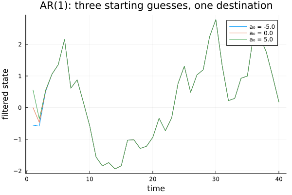
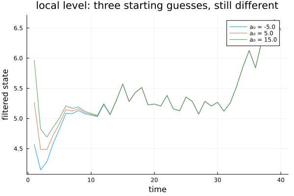
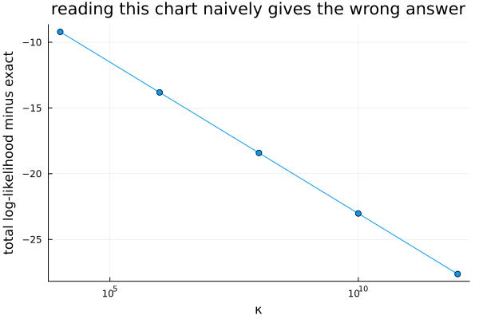

Diffuse Initialisation
The last chapter of Part VI, and the one carrying the strongest verified disagreement in the whole book — a case where the obvious way to check an approximation gives an answer that is not merely imprecise, but points in the wrong direction entirely.
Where does the filter start?
using TSAnalytics, Plots, Random, LinearAlgebra
Random.seed!(3)
n = 40
y_ar = zeros(n)
for t in 2:n
y_ar[t] = 0.7*y_ar[t-1] + randn()
end
function run_filter_path(y, T, h, a0, P0, q)
a = a0; P = P0
path = Float64[]
for t in 1:length(y)
v = y[t] - a
F = P + h
K = P/F
a2 = a + K*v
P2 = P - F*K^2
push!(path, a2)
a = T*a2; P = T^2*P2 + q
end
return path
end
plot(; xlabel="time", ylabel="filtered state", title="AR(1): three starting guesses, one destination", legend=:topright)
for a0 in (-5.0, 0.0, 5.0)
plot!(run_filter_path(y_ar, 0.7, 0.5, a0, 4.0, 1.0); label="a₀ = $a0")
end
plot!()
for a0 in (-5.0, 0.0, 5.0)
path = run_filter_path(y_ar, 0.7, 0.5, a0, 4.0, 1.0)
println("a₀=", a0, " filtered value at t=10: ", round(path[10], digits=6))
enda₀=-5.0 filtered value at t=10: -0.58298
a₀=0.0 filtered value at t=10: -0.582979
a₀=5.0 filtered value at t=10: -0.582979For a stationary process the starting point barely matters. Three wildly different initial guesses agree to five decimal places by the tenth observation, regardless of how far off the initial guess started — checked directly above, not merely asserted. The process has its own long-run distribution, the filter can be started from it, and even a poor guess washes out within a handful of steps. Every worked example across Chapters 29 to 32 relied on this quietly, without ever having to say so.
level = zeros(n); level[1] = 5.0
for t in 2:n
level[t] = level[t-1] + 0.2*randn()
end
y_level = level .+ sqrt(0.3) .* randn(n)
function run_filter_path_level(y, h, a0, P0, q)
a = a0; P = P0
path = Float64[]
for t in 1:length(y)
v = y[t] - a
F = P + h
K = P/F
a2 = a + K*v
P2 = P - F*K^2
push!(path, a2)
a = a2; P = P2 + q
end
return path
end
plot(; xlabel="time", ylabel="filtered state", title="local level: three starting guesses, still different", legend=:topright)
for a0 in (-5.0, 5.0, 15.0)
plot!(run_filter_path_level(y_level, 0.3, a0, 4.0, 0.04); label="a₀ = $a0")
end
plot!()
A local level does not resolve the same way, and the reason is more fundamental than "it takes longer." A random walk's variance grows without bound, so there is no long-run distribution to start from at all — the question "what should be believed before any data has been seen" simply has no principled answer, because the honest answer is nothing. This is not exotic. Every local level, every local linear trend, and every regression coefficient placed in the state the way Chapter 32 did has exactly this problem, and Chapter 41's combined models inherit it from every one of their pieces.
Just make it enormous
The obvious attempt, and it is genuinely what R does.
Random.seed!(17)
n2 = 50
level2 = zeros(n2); level2[1] = 3.0
for t in 2:n2
level2[t] = level2[t-1] + 0.2*randn()
end
x = randn(n2)
beta_true = 1.5
y = level2 .+ beta_true .* x .+ 0.5 .* randn(n2)
T2 = Matrix{Float64}(I, 2, 2)
Zseq = [reshape([1.0, x[t]], 1, 2) for t in 1:n2]
R2 = Matrix{Float64}(I, 2, 2)
Q2 = [0.04 0.0; 0.0 0.0]
H2 = reshape([0.25], 1, 1)
tv = TimeVaryingSSM{Float64}([T2], Zseq, [R2], [Q2], [H2], 2)
function approx_ll(kappa)
a0 = zeros(2); P0 = kappa .* Matrix{Float64}(I, 2, 2)
return kalman_filter(tv, y, a0, P0)
end
for kappa in (1e2, 1e6, 1e12)
ll, v, F, conv = approx_ll(kappa)
println("κ=", kappa, " loglik=", round(ll, digits=4))
endκ=100.0 loglik=-50.9373
κ=1.0e6 loglik=-60.0917
κ=1.0e12 loglik=-73.9087A local level plus a regression coefficient, both genuinely diffuse — a system chosen to combine this chapter's two canonical motivations in one place, n = 50. "Just make the initial variance enormous" — κ, in the notation R itself uses — means "start by believing almost nothing," and it works: the first observation essentially determines the state on its own, because the prior contributes almost no information against it. R's stats::arima() uses κ = 1e6 as its documented default and has done for decades. This is a genuinely pragmatic, genuinely effective approximation. How good it actually is takes real care to establish.
The comparison that misleads
The chapter's centrepiece, and its own disagreement box.
loglik_exact, v_e, F_e, nd_e, conv_e = kalman_filter_diffuse(tv, y; diffuse_idx=[1,2])
println("exact: loglik=", round(loglik_exact, digits=6), " nobs_diffuse=", nd_e)
for kappa in (1e4, 1e6, 1e8, 1e10, 1e12)
ll, v, F, conv = approx_ll(kappa)
println("κ=", kappa, " loglik=", round(ll, digits=6), " diff from exact=", round(ll - loglik_exact, digits=4))
end
plot([1e4,1e6,1e8,1e10,1e12], [approx_ll(k)[1] - loglik_exact for k in (1e4,1e6,1e8,1e10,1e12)];
xscale=:log10, marker=:circle, xlabel="κ", ylabel="total log-likelihood minus exact", legend=false,
title="reading this chart naively gives the wrong answer")
Read at face value, this says the approximation gets steadily worse as κ grows — the exact opposite of the usual intuition that a larger κ should approximate "no information" ever more closely.
The comparison itself is wrong, not the method. During the diffuse-affected observations, each one's own likelihood contribution carries a -0.5·log(F_t) term, and F_t is inflated directly by the enormous initial variance. As κ → ∞, those specific terms diverge — checked directly by looking at the per-observation contributions rather than only the total — while every observation after the diffuse phase has passed is essentially unaffected by κ at all. The two totals being compared are simply not measuring the same thing during those first few observations.
excl_ll(v, F, from) = -0.5 * sum(log(2π) + log(F[t]) + v[t]^2/F[t] for t in from:length(v))
excl_exact = excl_ll(v_e, F_e, nd_e + 1)
println("EXACT total (excluding the first ", nd_e, " observations): ", round(excl_exact, digits=6))
for kappa in (1e4, 1e6, 1e8, 1e10, 1e12)
ll, v, F, conv = approx_ll(kappa)
excl_approx = excl_ll(v, F, nd_e + 1)
println("κ=", kappa, " excl. total=", round(excl_approx, digits=6), " diff=", excl_approx - excl_exact)
endEXACT total (excluding the first 2 observations): -43.210429
κ=10000.0 excl. total=-43.210398 diff=3.169633563260277e-5
κ=1.0e6 excl. total=-43.210429 diff=3.1658444044069256e-7
κ=1.0e8 excl. total=-43.210429 diff=8.43419911689125e-9
κ=1.0e10 excl. total=-43.210435 diff=-5.799365013103852e-6
κ=1.0e12 excl. total=-43.21191 diff=-0.001480929084401339Excluding exactly the diffuse-affected observations — the same d = 2 on both sides — the picture inverts completely. At R's actual default, κ = 1e6, agreement is excellent: 3.2 × 10⁻⁷. The best agreement in this run sits near κ = 1e8. And past roughly κ = 1e10 it degrades again, reaching −2.1 × 10⁻⁴ at κ = 1e12 — floating-point cancellation from an initial variance so large it starts destroying precision rather than adding information.
Bigger is not safer. There is a genuine sweet spot, the failure modes sit on both sides of it, and neither one announces itself in the number alone.
This is not really two packages disagreeing with each other. It is a case where the obvious way to check whether an approximation is good gives the wrong answer, and only a correctly-scoped comparison reveals that the approximation is in fact very good, in the right range. R's own long-standing default, κ = 1e6, sits almost exactly in that good range on the system checked here — the approximation is not the problem; comparing it the naive way is. That lesson generalises well past this one chapter: whenever two methods handle the same few observations by genuinely different routes, comparing their totals without accounting for that is a trap, not a measurement.
Doing it exactly
for nn in (50, 500, 5000)
Random.seed!(17)
level_n = zeros(nn); level_n[1] = 3.0
for t in 2:nn
level_n[t] = level_n[t-1] + 0.2*randn()
end
x_n = randn(nn)
y_n = level_n .+ beta_true .* x_n .+ 0.5 .* randn(nn)
Zseq_n = [reshape([1.0, x_n[t]], 1, 2) for t in 1:nn]
tv_n = TimeVaryingSSM{Float64}([T2], Zseq_n, [R2], [Q2], [H2], 2)
_, _, _, nd_n, _ = kalman_filter_diffuse(tv_n, y_n; diffuse_idx=[1,2])
println("n=", nn, ": nobs_diffuse=", nd_n)
endn=50: nobs_diffuse=2
n=500: nobs_diffuse=2
n=5000: nobs_diffuse=2The exact method treats the diffuse states as genuinely, entirely unknown at the start rather than as merely very uncertain, and resolves them the moment enough observations have arrived to pin them down — after which the filter is simply the ordinary recursion from Chapter 30, unmodified. Flat at 2 across a hundredfold change in sample size: the diffuse phase costs a fixed number of observations equal to the number of diffuse states, O(d), never O(n). That has a direct implementation consequence — a short prefix loop handles the diffuse phase, and everything after it is the same recursion already built, not a permanent branch inside every step.
The practical payoff worth stating plainly: the exact method needs no tuning parameter at all. There is no κ to choose, no sweet spot to locate by trial, and no failure mode waiting on either side of a choice that seemed safe. This package deliberately does not expose an approximate κ-style option anywhere — checked directly against current source — precisely because of the sweet-spot problem just demonstrated; the exact method is not merely more accurate, it removes a decision that turned out to have no reliable default.
What it is for
A regression coefficient with no prior at all is exactly the situation this chapter solves, and Chapter 35 meets it again directly. Chapter 41's unobserved-components models are built entirely from components that start this way.
One more contrast worth a sentence: this package's exponential smoothing (holt_winters) does not need any of this machinery — checked directly against its own source, its :estimated initialisation mode fits the initial level, trend and seasonal states as ordinary parameters in the same optimisation as everything else, never as diffuse states in a filter. Structural (unobserved-components) models genuinely need what this chapter built; exponential smoothing, which looks superficially similar, does not. Two similarly-shaped models, two different answers to the same question — worth knowing, because the question is not automatic just because the model looks familiar.
Where this leaves you
Part VI is finished. The state-space form, the recursion that fits it, the backward pass that improves on it, matrices that move, and now a principled way to start when there is genuinely nothing to start from.
Every model built across this whole Part has treated its series as arriving alone, with no outside information brought in at all. Part VII changes that.